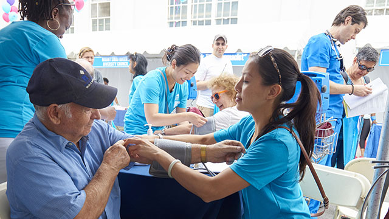

Welcome to Colebrooke Hospital
Welcome to Colebrooke Hospital, where we are committed to providing exceptional healthcare services to our community. Our team of dedicated professionals is here to ensure you receive the highest quality care in a compassionate and supportive environment. Explore our services, meet our experts, and learn how we can help you achieve your health and wellness goals.
Our Services Include
- Emergency and Urgent care
- Inpatient and outpatient surgery
- Maternity and newborn care
- Pediatric services
- Mental health and counselling services
- Rehabilitation and physical therapy
Our Patient Commitment
- Ensure timely and efficient access to care.
- Provide compassionate and personalized patient care.
- Maintain the highest standards of medical excellence.
- Engage in continous community support and outreach.
Contact Us
7 Alfred Road,
Colebrooke Avenue,
Colombo 07.
TEL: +94 11 433 2200
Comprehensive Medical Services
At Colebrooke Hospital, we offer a wide range of medical services to meet the diverse needs of our patients. From primary care and preventive medicine to specialized treatments and surgeries, our state-of-the-art facilities and expert medical staff are equipped to handle all aspects of your health care. We believe in a patient-centered approach, ensuring that each individual receives personalized care tailored to their specific needs.
Our hospital is home to various specialty departments, including cardiology, oncology, orthopedics, and more. Each department is staffed by experienced professionals who are leaders in their fields, providing advanced treatments and innovative therapies. Whether you need routine check-ups or complex medical procedures, Colebrooke Hospital is here to support your health journey.
Patient and Family Support
We understand that a hospital visit can be a challenging experience for both patients and their families. That's why Colebrooke Hospital offers comprehensive support services to make your stay as comfortable as possible. Our dedicated patient care team is available around the clock to address any concerns and ensure that your needs are met promptly and efficiently.
In addition to medical care, we provide a range of amenities designed to support the well-being of our patients and their loved ones. From comfortable waiting areas and on-site dining options to educational resources and support groups, we are committed to creating a healing environment that fosters recovery and well-being.

Community Engagement and Outreach
Colebrooke Hospital is proud to be an active participant in our local community. We believe in giving back and are involved in various outreach programs aimed at improving public health and wellness. Our initiatives include free health screenings, educational workshops, and community health fairs, all designed to promote healthier lifestyles and early detection of medical conditions.
We also partner with local organizations to provide resources and support to underserved populations. By working together with community leaders and stakeholders, we strive to create a healthier, more resilient community. Your health and well-being are our top priorities, and we are committed to making a positive impact both inside and outside our hospital walls.
Thank you for choosing Colebrooke Hospital. Your health is our mission, and we are dedicated to providing the best possible care for you and your family.